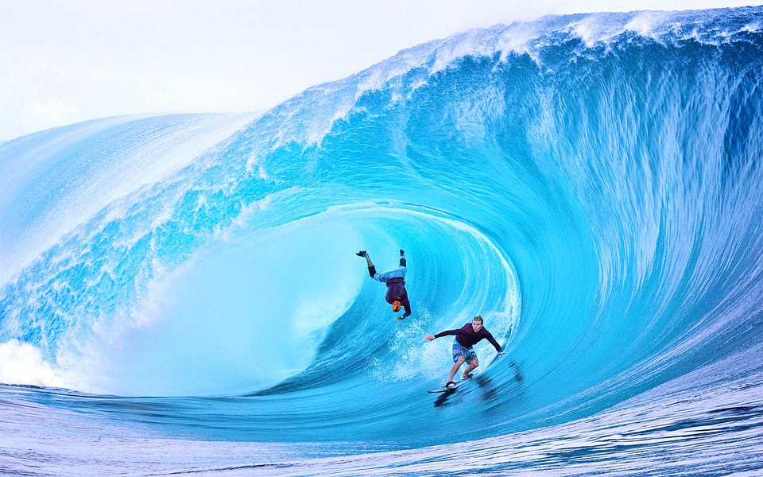

big wave surfing

what is big wave surfing?
Big wave surfing is a discipline within surfing in which experienced surfers
paddle into, or are towed into, waves which are at least 20 feet (6.2 m) high, on surf
boards known as "guns" or towboards.[1] Sizes of the board needed to successfully surf
these waves vary by the size of the wave as well as the technique the surfer uses to reach
the wave. A larger, longer board allows a rider to paddle fast enough to catch the wave and
has the advantage of being more stable, but it also limits maneuverability and surfing speed.[2][3]
thebiggest wavesin the world
- Nazaré, Portugal
- Maui, Hawaii
- Tahiti, French Polynesia
- Mavericks California
- Baja California, Mexico
the biggest waves in the world-surfer today

In a big wave wipeout, a breaking wave can push
surfers down 20 to 50 feet (6.2 m to 15.5 m) below
the surface
Once they stop spinning around, they
have to quickly regain their equilibrium and figure
out which way is up. Surfers may have less than 20
seconds to get to the surface before the next wave
hits them. Additionally, the water pressure at a
depth of 20 to 50 feet can be strong enough to rupture
one's eardrums. Strong currents and water action at those
depths can also slam a surfer into a reef or the ocean floor,
which can result in severe injuries or even death.
One of the greatest dangers is the risk of being held underwater by two
or more consecutive waves. Surviving a
triple hold-down is extremely difficult,
and surfers must be prepared to cope with these situations.